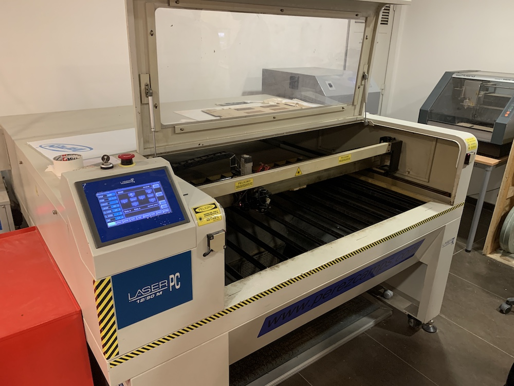
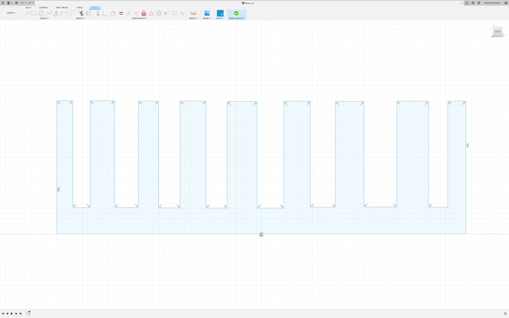
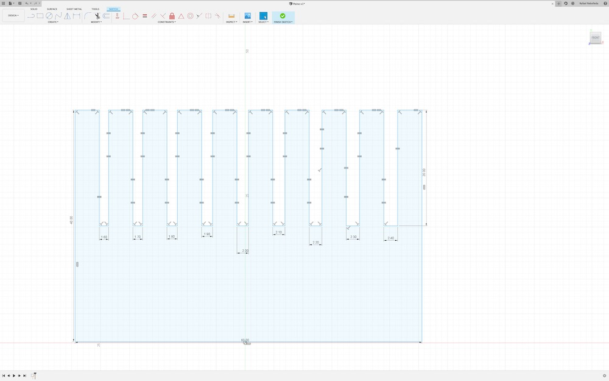
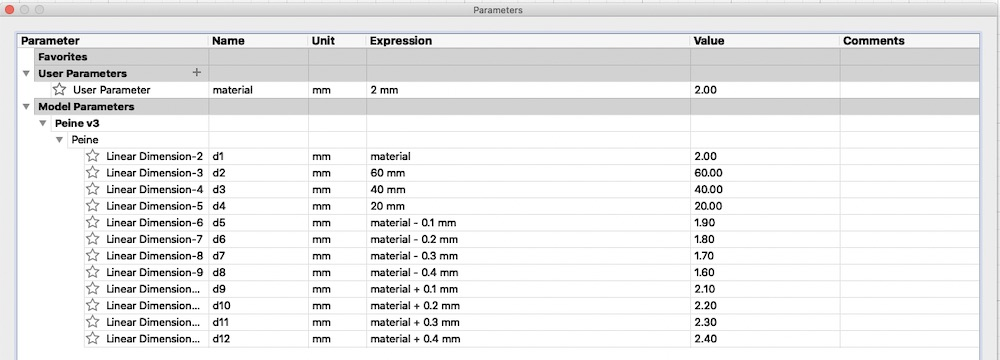
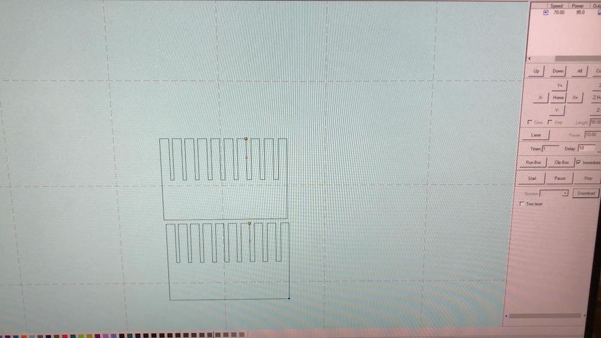
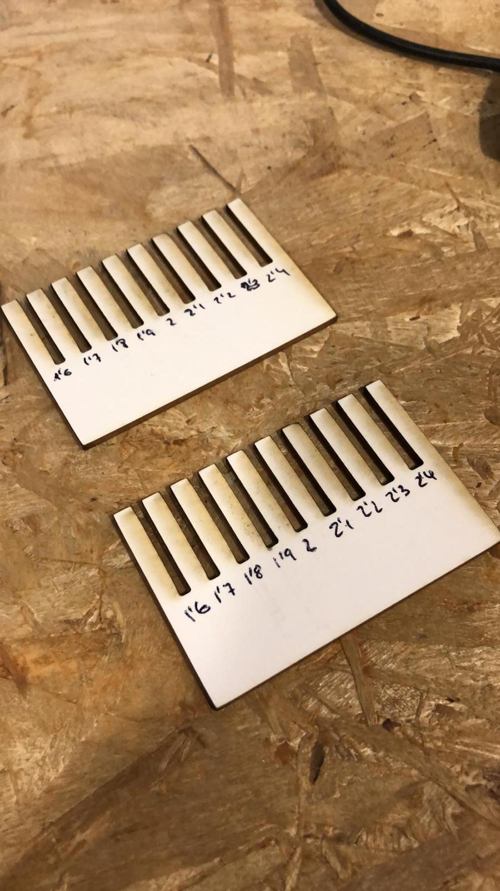
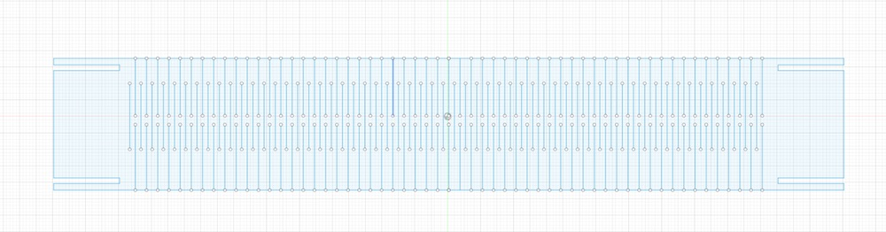
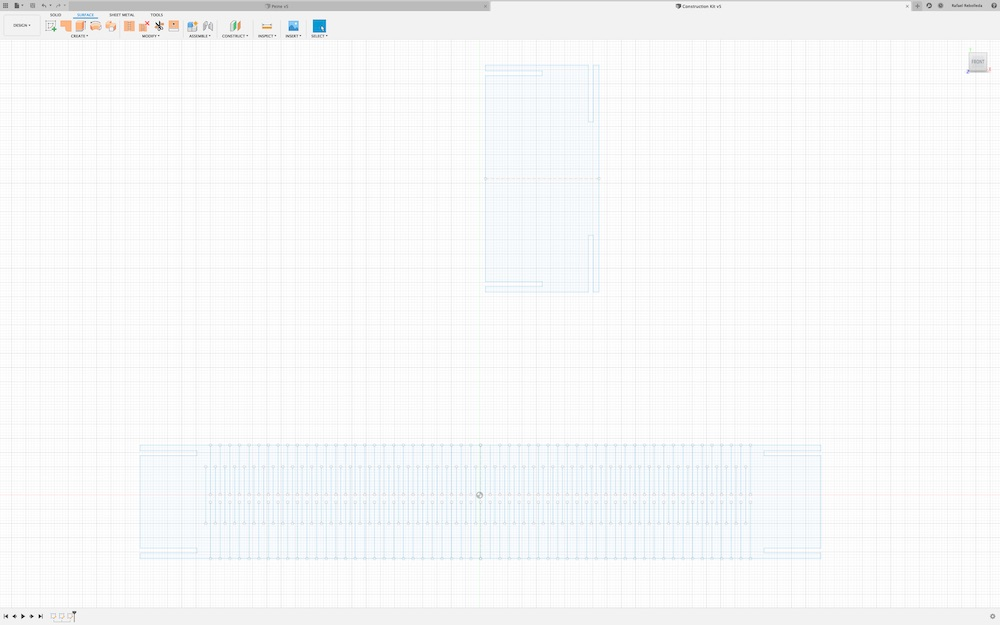
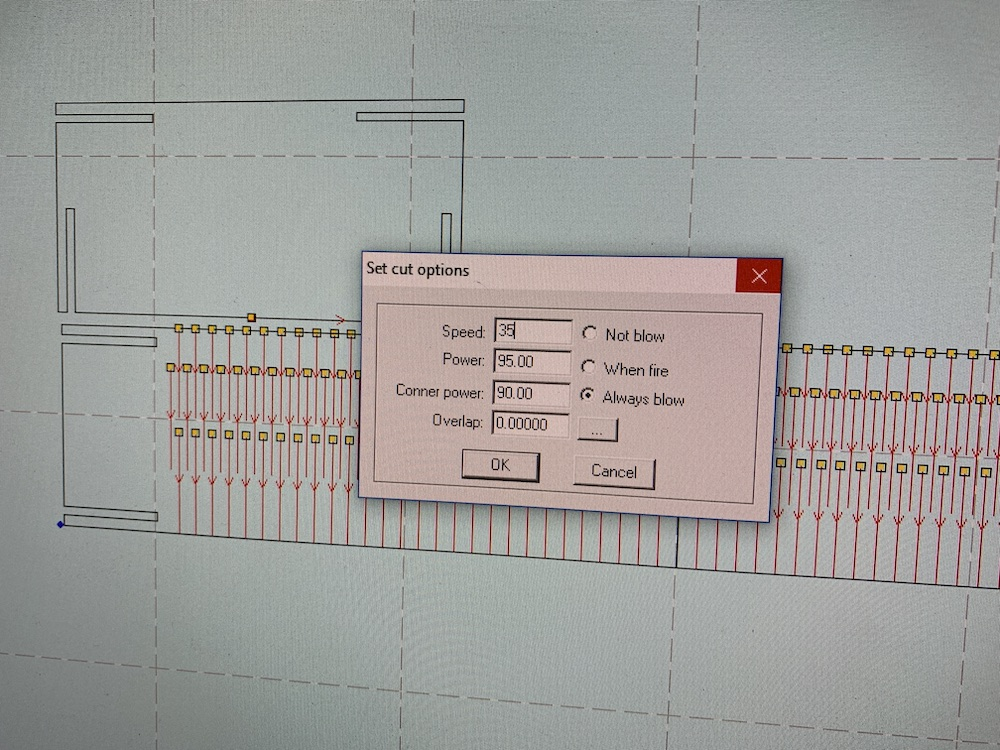
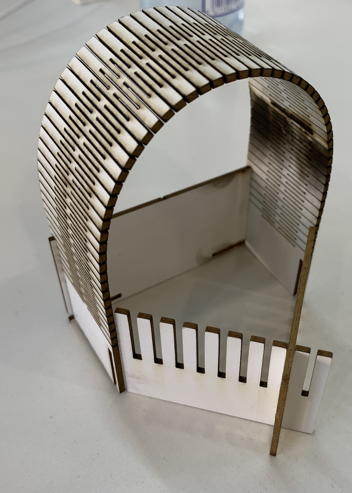

<!DOCTYPE html>
<html lang="en"></html>
<head>
  <meta charset="utf-8">
  <meta content="IE=edge" http-equiv="X-UA-Compatible">
  <meta content="width=device-width, initial-scale=1" name="viewport">
  <title> Rafael Rebolleda — Fab Academy 2020 Documentation</title>
  <!-- Google Fonts-->
  <link rel="stylesheet" href="https://fonts.googleapis.com/css?family=Catamaran&amp;display=swap">
  <link rel="stylesheet" href="../css/main.css">
</head>
<body> 
  <nav>
    <header>
      <ul>
        <li>Rafael Rebolleda</li>
        <li>ESNE + LEON</li>
        <li>Madrid, Spain</li>
      </ul>
      <p class="bio">Human Centric Research & Innovation consultant and professor. Also looking for PhD opportunities!</p>
    </header>
    <ol>
      <li><a class="red" href="../">About me</a></li>
      <li><a class="blue" href="../FP/">Final Project</a></li>
      <li><a class="blue" href="../DEV/">Project Development</a></li>
    </ol>
    <h1>Assignments</h1>
    <ol> 
      <li><a href="../W1/">Principles & Practices</a></li>
      <li><a href="../W2/">Computer Aided Design</a></li>
      <li><a href="../W3/">Computer Controlled Cutting</a></li>
      <li><a href="../W4/">Electronics Production</a></li>
      <li><a href="../W5/">3D Scan + Printing</a></li>
      <li><a href="../W6/">Electronics Design</a></li>
      <li><a href="../W7/">Computer Controlled Machining</a></li>
    </ol>
  </nav>
  <main>
    <h1>W3: Computer Controlled Cutting</h1>
    <h2>The laser cutter</h2>
    <P>Here's the laser cutter we have on the lab.</P>
    <h2>The Comb</h2>
    <p>Alright... so back to Fusion360 to wrestle parametric design (still complete gibberish to me). First, I created a rough shape by just joining the dots</p>
    <p>In the next step I manually gave them constraints and measures</p>
    <p>Finally, I move all cut dimensions as paramenters that depend on the material depth, in this case 2mm cardboard</p>
    <p>This is the cutting of two combs to test what's the best fit and underdstand kerf value.</p>
    <p>These are the values I tried</p>
    <p>The best match for this material is at 1,7mm, and measuring the actual cuts, we know the ketf value is 0.2mm</p>
    <h2>A very basic construction kit</h2>
    <p>Now that I have the measure, my goal is to learn:</p>
    <ul>
      <li>How to apply parametric design with the material and machine in mind</li>
      <li>Learn how to use mirroring in CAD</li>
      <li>Learn how to use patterns in CAD</li>
    </ul>
    <p>I modeled two pieces in Fusion360, a simple one and another to be bent. Both use constraints and parameters extensively.</p>
    <p>Next, we need to import that inthe laser cutter software and adjust laser settings:</p>
    <p>Here we can see the actual cutting:</p>
    <video src="cutting.mp4" type="video/mp4" controls="true"></video>
    <p>And this is a very basic assembly of the kit!</p>
  </main>
  <footer>
    <hr>
    <p><a rel="license" href="http://creativecommons.org/licenses/by-nc/4.0/"></a><br />This work is licensed under a <a rel="license" href="http://creativecommons.org/licenses/by-nc/4.0/">Creative Commons Attribution-NonCommercial 4.0 International License</a>.</p>
  </footer>
</body>